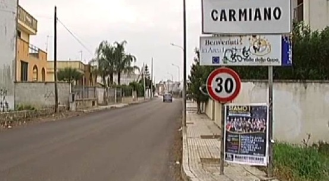

Benvenuti a Carmiano
Carmiano è un comune italiano di 12.166 abitanti della provincia di Lecce in Puglia. È situato nel Salento, nel territorio settentrionale della provincia di Lecce. Rientra nel Parco del Negroamaro e dista 11 km dal capoluogo provinciale in direzione ovest. Area: 23 km² Altitudine: 33 m
